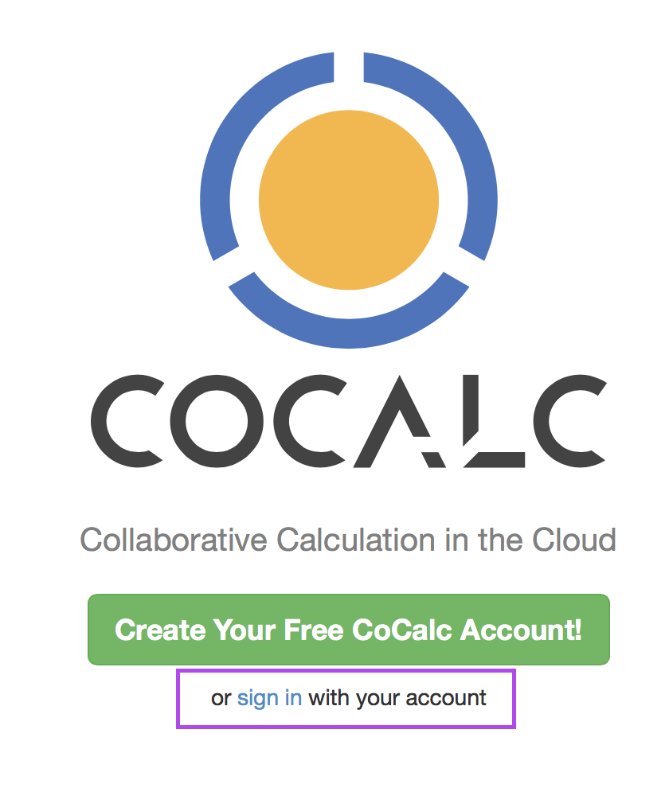

BMS 353
Bionformatics for Biomedical Sciences
An introduction to the tools we will be using
R vs the old way

R is a free language and environment for statistical computing and graphics
- Very expensive
- Popular with industry
Not surprisingly R is far more popular now! http://r4stats.com/articles/popularity/
The number of jobs requiring R has increased too!

Packages
- Comprehensive R archive Network (CRAN) 9662 packages (November 2016) https://cran.r-project.org
- Bioconductor 1211 packages (November 2016) http://bioconductor.org/
Packages
- Comprehensive R archive Network (CRAN) 11749 packages (November 2017) https://cran.r-project.org
- Bioconductor 1476 packages (November 2017) http://bioconductor.org/
Jupyter notebooks

Combine live computer code, data, tetx, and mathematics in an
interactive document.
Academic papers only gve a description of your analyis.
Jupyter notebooks contain both the description and the analysis.
- Collaborative computational mathematics
- All open source environment for running Jupyter notebooks (and others) in the cloud
- Dedicated Virtual Machine for this course on the Google Cloud Platform
- As powerful as a node on the Sheffield University Supercomputer: Iceberg
Log into CoCalc

Handy tips for the notebooks
To add Latex in a markdown cell make sure to enclose in $$
or $